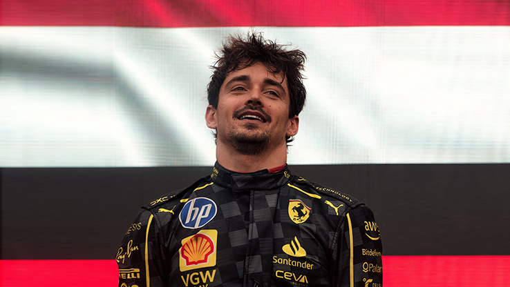

Charles Leclerc
The man who can't be moved in Ferrari

Charles Leclerc's origin is Monaco,
as he was born in Monte Carlo on October 16, 1997. His family
has strong ties to Monaco, and his father was also a racing driver.
EWAN Q
Click for more info